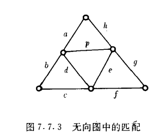

离散数学-图论
本文最后更新于 2024年12月27日 晚上
图论
图论的基本概念
图
$设V和E是有限集合,且V\neq \emptyset$
(1)如果$\Phi:E\rightarrow\{\{v_1,v_2\}|v_1\in V且v_2\in V\}$,则称$G=
(2)如果$\Phi:E\rightarrow V\times V$,则称$G=
特殊图
- 结点都是孤立点的图:零图
- 一阶零图称为平凡图
- 所有结点的度均为自然数d的无向图称为d度正则图
- $n\in I_+$,如果n阶简单无向图是n-1度正则图,则称为完全无向图
- $n\in I_+$,若n阶简单有向图的每个结点的入度和出度均为n-1,则称为完全有向图
同构
$设G=
$\Psi’(g(e))=\begin{cases}
则称G与G’同构,记作$G\cong G’$
两个同构的图必有相同的结点个数和边数,并且:
- 双射f保持结点之间的邻接关系
- 双射g保持边之间的邻接关系
子图
由点集导出的子图
设图$G=
相交,可运算
- $e\in E\cap E’时均有\Psi(e)=\Psi’(e)$,则称G与G’可运算
- 如果$V\cap V’=E\cap E’=\emptyset$,则称$G,G’$不相交
路径
定义
设 $n\in N，v_0, v_1…，v_n $是图G的结点，$e_1, e_2, …, e_n$是图G的边，并且vi-1 和vi 分别是 $e_i $的起点和终点 ($ i=1,
2, …, n $)，则称序列$v_0 e_1 v_1 e_2 … v_{n-1} e_n v_n $为图 G 中从$ v_0 $至$v_n$的路径，$n$ 称为该路径的长度。
$G=
$\begin{cases} v_0,v_1,\dots,v_n\in V\\ e_1,e_2,\dots,e_n\in E\\ \color{red}{e_i:关联v_{i-1}和v_i} \end{cases}$
简单路径:边不重复的路径(迹)
简单回路:边不重复的回路
基本路径:点不重复的路径(路径)
基本回路:点不重复的回路
定理3.1
设图$G=
- n阶图有n个结点
- 基本路径上的结点各不相同
- n阶图中的基本路径最多含有n个结点
- n阶图中的基本路径最多含有n-1条边
定理3.2
$n$阶图的基本路径的长度小于$n$
可达
设图$G=
- 若存在从$v_1$到$v_2$的路径,则称在$G$中$v_1$可达$v_2$,或从$v_1$到$v_2$可达
- 否则称在$G$中从$v_1$不可达$v_2$,或从$v_1$到$v_2$不可达
定理3.3
从 $v_1$可达 $v_2$当且仅当存在从 $v_1$至 $v_2$的基本路径
距离
$v_1$可达$v_2\Rightarrow$路径中长度最短者为$v_1$到$v_2$的测地线,并称该测地线的长度为从$v_1$到$v_2$的距离,记作$d(v_1,v_2)$
$v_1$不可达$v_2\Rightarrow d(v_1,v_2)=\infty$
直径
图$G=
加权图
$W:E\rightarrow R_+,则称
- $e\in E$,则称$W(e)$为$e$的加权长度
- 路径中所有边的加权长度之和称为该路径的甲醛长度
- 从结点$v$到结点$v’$的路径中,加权长度最小的称为从$v$到$v’$的最短路径
- 若从$v$可达$v’$,从结点$v$到结点$v’$的最短路径的加权长度为从结点$v$到结点$v’$的加权距离
连通性
定义
如果无向图$G$的任意两个结点都互相可达,则称$G$是连通的,否则称$G$是非连通的
连通分支与等价关系
设$G’$是图$G$的具有某性质$P$的子图,并且对于$G$的具有该性质的任意子图$G’’$,只要$G’\subseteq G’’$就有$G’=G’’$,则称$G’$相对于该性质是$G$的极大子图
无向图$G$的极大连通子图称为$G$ 的连通分支，简称分支
$R_V=\{

三种连通性
设$G$为有向图
- 强相通:任意两个结点都互相可达
- 单项连通:任意两结点,必有一个结点可达另一结点
- 弱相通:基础图是连通的(把有向图看成是无向图是连通的)
设$G$为有向图
- $G$的极大强连通子图称为G的强连通分支
- $G$的极大单向连通子图称为$G$的单向分支
- $G$的极大弱连通子图称为$G$的弱分支
非连通无向图有一个以上分支;连通无向图恰有一个分支.
有向图的结点一定恰好处于一个强分支中,但边不一定;有向图结点与边都不一定恰好在一个单向分支中
回路
半路径定义
$G’$为有向图$G=
设$v_0e_1v_1\dots v_{m-1}e_mv_m$是$G$中的半路径,对每个$i(1\leq i\leq m)$,
- 若$\Psi(e_i)=
- 若$\Psi(e_i)=
回路定义
- 连通2度正则图(所有结点的度均为自然数2的无向图)称为回路
- 基础图是回路的有向图称为半回路
- 每个结点的出度和入度均为1的弱连通有向图称为有向回路
回路证明定理
设$v$是图$G$的任意结点,$G$是回路,当且仅当:
- $G$的阶与边数相等
- 在$G$中存在一条从$v$到$v$的闭路径,使得除了$v$在该闭路径中出现两次外,其余结点和每条边都在该闭路中恰出现一次
有向路,非循环图
- 如果回路C是图G的子图,则称G有回路C
- 没有回路的无向图和没有半回路的有向图称为非循环图
有向回路的充分条件
如果有向图G有子图G’,使得对于G’的任意结点v,皆有$d_{G’}^->0$,则G有有向回路
如果有向图G有子图G’,使得对于G’的任意结点v,皆有$d_{G’}^+>0$,则G有有向回路
非循环图的充分必要条件
图G不是非循环图当且仅当G有子图G’,使得对于G’的任意结点v,皆有$d_{G’}(v)>1$
Dijkstra算法
求从结点s至t的加权距离
- $\lambda(s)\leftarrow 0,\forall v\in V-\{s\},\lambda(v)\leftarrow \infty,\{p\leftarrow \sharp\}$
- $T\leftarrow V$
- $任取u\in\{u’|若v’\in T, 则\lambda(u’)\leq \lambda(v’)\}$
- $如果u=t,则\{p\leftarrow pt\sharp\}算法结束$
- $对于以u为起点的每条边e,如果e的终点v\in T并且\lambda(v)>\lambda(u)+W(e),则\lambda(v)\leftarrow \lambda(u)+W(e)$
- $T\leftarrow T-\{u\},\{p\leftarrow pu\Rightarrow\}且转向3.$
当算法结束时,$\lambda(t)即为s至t的加权距离,p即为从s至t的最短距离$
证明:非连通无向图的补图必连通
证明:设$G$为$n$阶简单无向图,若$G$的任意结点$v$皆有$d_G(v)\geq (n-1)/2$,则$G$是连通的
11.证明有$k$个弱分支的$n$阶简单有向图至多有$(n-k)(n-k+1)$条边
欧拉图和哈密顿图
欧拉图定义
图中包含所有边的简单开路径称为图的欧拉路径
图中包含其所有边的简单闭路径称为图的欧拉闭路
每个结点都是偶结点(度为偶数的结点)的无向图称为欧拉图
每个结点的出度和入度都相等的有向图称为欧拉有向图
欧拉定理
图G中包含其所有边的简单开路径称为$G$的欧拉路径,图$G$中包含其所有边的简单闭路径称为$G$的欧拉闭路
定理1
设G为连通无向图,G是欧拉图 iff G有欧拉闭路
定理2
$设G=
定理3
设G为弱连通的有向图,G是欧拉有向图 iff G有欧拉闭路
定理4
设G为弱连通的有向图,$v_1,v_2$为G的两个不同结点
G有一条从$v_1$到$v_2$的欧拉路径 iff $d_{G^+}(v_1)=d_{G^-}(v_1)+1,d_{G^+}(v_2)=d_{G^-}(v_2)-1$
定理5
如果$G_1,G_2$为可运算($如果e\in E_1\wedge E_2,则\Psi_1(e)=\Psi_2(e)$)的欧拉图,则$G_1\oplus G_2$是欧拉图
Hamilton回路
回路C是图G的生成子图,则称C为G的Hamilton回路
图的矩阵表示
$设m\in I_+$,n阶图$G$的全部结点为$v_1,v_2,\cdots ,v_n$,若$X$是$G$的邻接矩阵且$1\leq i,j\leq n$,则$x_{ij}^{(m)}$等于$G$中从$v_i$到$v_j$的长度为$m$的路径数
n阶图$G$与$X(G)$的联系
- 无向图$G$的邻接矩阵$X(G)$是对称的
- 图$G$没有平行边$\Leftrightarrow $$X(G)$的元素都是0和1
- 图$G$有自圈$\Leftrightarrow$$X(G)$的对角线有非0元素
定理7.5.1
$x_{ij}^m$等于$G$中从$v_i$到$v_j$的长度为m的路径数
可达性矩阵
$p(i)=\begin{cases}1,由v_i可达v_j\\0,从v_i不可达v_j\end{cases}$
距离矩阵
$d_{ij}=\begin{cases}\infty,(\forall m)(m\in N\wedge m
路径矩阵
$P=\sum^{n-1}_{k=0}X^{(k)}$
关联矩阵
无向图无自圈,其结点集合和边集合分别为$\{v_1,v_2,\cdots,v_n\}$和$\{e_1,e_2,\cdots,e_m\}$,定义$G$的关联矩阵$A(G)$为$n\times m$矩阵$(a_{ij})$,其中
$a_{ij}=\begin{cases}1,e_j与v_i关联\\0,e_j与v_i不关联\end{cases}$
$a_{ij}=\begin{cases}1,v_i是e_j的起点\-1,v_i是e_j的终点\\0,e_i与v_i不关联\end{cases}$
无向图$G$的关联矩阵$A(G)$的每列元素之和为2
有向图$G$的关联矩阵$A(G)$的每列元素之和为0
顺序排列$G$的结点和边的顺序,可使$A(G)=\begin{bmatrix}A(G_1)\\&A(G_2)\\&&\cdots\\&&&A(G_k)\end{bmatrix}$
二部图
设无向图$G=
定理
设$G$是阶大于1的无向图,$G$是二部图当且仅当$G$的所有回路的长度均为偶数
匹配
无向图$G=
- 如果$E’$不包含自圈,并且$E’$中的任何两条边都不邻接,则称$E’$为$G$中的匹配
- 如果$E$是$G$中的匹配,并且对于$G$中的一切匹配$E’’$,当$E’\subseteq E’’$时皆有$E’=E’’$,则称$E’$为$G$中的极大匹配
- $G$中边数最多的匹配称为$G$的最大匹配
- $G$中的最大匹配所包含的边的数目称为$G$的匹配数

极大匹配:{a,e},{b,e},{c,p},{f,p},{g,d},{h,d},{a,c,g},{b,f,h}
最大匹配:{a,c,g},{b,f,h}
匹配数:3
完美匹配
设$V_1,V_2$时二部图$G$的互补结点子集,如果$G$的匹配数等于$n(V_1)$,则称$G$中的最大匹配数为$V_1$到$V_2$的完美匹配
树
定义
非循环的连通无向图
定理
$G=
- $G$是连通的和非循环的
- $G$无自圈,且当$v,v’\in V$时,皆有唯一的一条从$v$到$v’$的基本路径
- $G$是连通的,且当$v,v’\in V,e\notin E,\Psi’=\{<e,\{v,v’\}\}$时,$G+\{e\}_{\Psi’}$皆有唯一的一个回路
- $G$是连通的,且当$e\in E$时,$G-e$都是非连通的
- $G$是连通的且$n(E)=n-1$
- $G$是非循环的且$n(E)=n-1$
生成树/生成森林
如果树$T$是无向图$G$的生成子图,则称$T$是$G$的生成树,如果森林$F$是无向图$G$的生成子图,则称$F$为$G$的生成森林